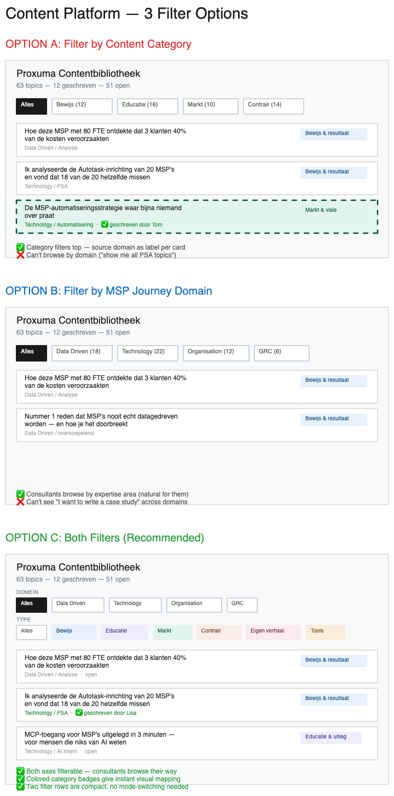

How we went from a PDF with MSP problems to a full product spec in one brainstorming session. This document walks through every conversation turn, design decision, and the final architecture.
Below is the complete brainstorming session, from the initial prompt to the final handoff. Every turn is included so you can see exactly how the design emerged.
github.com/Proxuma-Nova/claude-harness so please take that into account, that the architecture is well designed, well described and can be ported over later. What I need right now is Phase 1 done by tomorrow.
dxfferent.com/content/, completely separate from WordPress. Three files: index.html (SPA), api.php (REST API), data/content.db (SQLite, protected by .htaccess).
content.dxfferent.com it is. I'll set up the subdomain on SiteGround. That gets its own document root, completely separate from WordPress.

Cache-Control: no-store headers on API responses.
topics (63 pre-loaded items with id, title, hook, category, domain, subdomain, status, claimed_by), submissions (raw content linked to topic or standalone free-form), authors (just names). Topics seeded from a JSON file.
Cache-Control: no-store. Single api.php file with simple URL pattern matching.
index.html, api.php, seed.json, data/content.db (auto-created), .htaccess files. Create subdomain in SiteGround, SSH in, drop files. Portability: seed.json feeds Laravel seeder, API maps to resource routes, schema translates to migration, frontend decoupled.
docs/superpowers/specs/2026-04-29-content-platform-design.md. Please review it and let me know if you want to make any changes before we start writing out the implementation plan.
/superpowers:writing-plans, points to the spec, all source files, SSH creds, and tells it to ship today.
| Category | Count | Purpose | Example Hook |
|---|---|---|---|
| Bewijs & resultaat | 12 | Case studies, data analysis, proof points | "Ik analyseerde [X] en vond [Y]" |
| Educatie & uitleg | 16 | How-tos, explainers, frameworks | "Complex ding makkelijk gemaakt" |
| Markt & visie | 10 | Market predictions, vision pieces | "Toekomst van [markt / tool]" |
| Contrair & polariserend | 14 | Myth-busting, contrarian takes | "Waarom [mythe] niet klopt" |
| Eigen verhaal | 7 | Personal stories, lessons learned | "Wat ik nooit meer zou doen" |
| Tools & resources | 4 | Comparisons, lists, templates | "[X] vs [Y] voor MSP's" |
content.dxfferent.com/
index.html -- SPA (topic board + editor views)
api.php -- REST API (CRUD on SQLite)
seed.json -- 63 topics + MSP Journey context
data/
content.db -- SQLite (auto-created on first request)
.htaccess -- Deny from all
.htaccess -- URL rewriting, noindex, cache headers
topics (id, title, hook, category, domain, subdomain, status, claimed_by, created_at) submissions (id, topic_id, author, raw_content, category, domain, created_at, updated_at) authors (id, name, created_at)
| Method | Endpoint | Purpose |
|---|---|---|
| GET | /api/topics | List all topics (filters: category, domain, status) |
| GET | /api/topics/:id | Single topic with submissions |
| PATCH | /api/topics/:id | Update status, claimed_by, title, hook |
| POST | /api/submissions | Create submission (body: topic_id, author, raw_content) |
| PATCH | /api/submissions/:id | Edit content inline |
| GET | /api/stats | Counts by status, category, domain |
seed.json feeds a Laravel database seeder directly/api/*: swap the backend, keep the UIclaude-harness module with manifest.jsonOne brainstorming session produced a complete spec for a content platform that solves a real problem: getting expert knowledge out of consultants' heads and into a structured library. Phase 1 ships tomorrow. The rest builds on top without rework.
The full conversation where we read all source material, extracted 64 topics with MSP Journey context into seed.json, and produced a 5-task implementation plan. From spec to deployment-ready plan in one session.
~/docs/superpowers/specs/2026-04-29-content-platform-design.mdproxuma_contentbibliotheek.html — has all items as JS array with cat, title, hook, source fieldsmsp_journey_overzicht.pdf — problems/frustrations/questions per domain to embed in seed.json context fieldcontent-platform-mockups.excalidrawssh -i ~/.ssh/id_ed25519_siteground_dxfferent -p 18765 u110-srp2wn2ngthp@ssh.dxfferent.com~/ClaudeCode/content-platform/seed.json with all 64 topics. Each topic includes:
source field (e.g., "Data Driven / Analyse") was split into domain + subdomain, then matched to the corresponding MSP Journey section. For example, a topic with source "Technology / PSA" gets the full Problemen/Frustraties/Vragen from the "PSA (Autotask)" section of the PDF.
/api/* routing, noindex headers, SiteGround cache bypass. Data directory .htaccess with Deny from all to protect SQLite DB.
Cache-Control: no-store. CORS headers for local development.
content.dxfferent.com subdomain in SiteGround Site Tools before Task 4.
5-task implementation plan generated by a second Claude session from the design spec. Each task builds on the previous one. Local dev path: ~/ClaudeCode/content-platform/
~/ClaudeCode/content-platform/
index.html -- Full SPA: topic board + editor views
api.php -- REST API: routing, SQLite CRUD, auto-seed
seed.json -- 64 topics with MSP Journey context (pre-built)
data/
.htaccess -- Deny from all (protect SQLite DB)
content.db -- Auto-created on first API request
.htaccess -- URL rewriting, noindex, cache headers
Deny from all -- prevents direct download of the SQLite database file./api/* to api.php), X-Robots-Tag: noindex, nofollow header, Cache-Control: no-store on API responses, block direct access to data/ directory.php -S localhost:8888. Verify: 64 topics loaded, filters work, submission CRUD works, stats return correct counts.The largest file. Contains the complete single-page app with two views:
content.dxfferent.com must be created in SiteGround Site Tools before deployment. Tasks 1-3 can run without it.
~/www/content.dxfferent.com/public_html/)https://content.dxfferent.com/ and run through the full 13-point checklist above. Fix and redeploy if anything fails.The seed.json with all 64 topics and MSP Journey context has been pre-built. The implementation plan is ready for execution. One Claude session handles all 5 tasks sequentially, with local testing before deployment.
One session: executed the 5-task plan, deployed to production, then immediately built Phase 2 (Dashboard + Content Calendar with auto-planner). From plan to live product with 15 calendar entries and 5 content submissions.
X-Robots-Tag: noindex, nofollow header present<meta name="robots" content="noindex, nofollow"> in HTMLhttps://content.dxfferent.com/.
?v=timestamp) bypassed it. Updated .htaccess to add Cache-Control: no-store on HTML files to prevent future caching issues. Used Chrome MCP to hard-refresh the browser tab directly.
Content platform is live at content.dxfferent.com with Board, Dashboard, and Kalender tabs. 64 topics seeded, 5 demo submissions, 15 calendar entries across 3 weeks. Auto-planner distributes content across weekdays, rotating accounts and alternating platforms. Visual redesign in progress via Claude.ai.